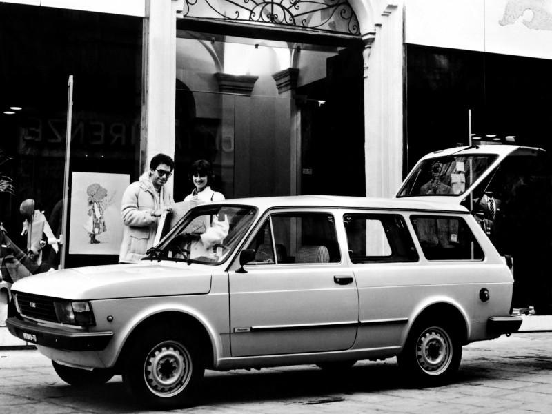

La storia della Fiat 127
- La 1a serie (1971 - 1977)
- La 2a serie (1977-1981)
- La 3a serie ed unificata (1981-1987)
- Tutti i colori disponibili per la Fiat 127, tabella colori
- Caratteristiche di tutte le 127
La 1a serie (1971 - 1977)
La fiat 127 fece compiere un grande balzo in avanti alle utilitarie Fiat. In campo europeo introdusse la nuova classe delle utilitarie lunghe 3,5 metri, agili in città e adatte a grandi viaggi. Nel 1972 fu eletta auto dell'anno.
La 127 volse pagina nella storia fiat grazie al motore trasversale e la trazione anteriore .
Già nel 1947 l'ing. Dante Giacosa, aveva progettato un'auto con il motore davanti e la trazione anteriore, ma il progetto non superò mai il visto dei dirigenti Fiat.
Probabilmente la contrarietà della dirigenza, risiedeva in un accaduto degli anni 30: l'Ing. Oreste Lardone progettò una vettura a trazione anteriore e durante il collaudo, la vettura prese fuoco e l'allora presidente della Fiat che si trovava a bordo, riuscì a defilarsi e licenzio in tronco l'Ing. il presidente di quegli anni era il senatore Giovanni Agnelli (nonno dell'avvocato) che non volle più sapere di trazione anteriore.
Quando nel 1959 la Morris mise in produzione la Mini Minor alla Fiat cominciarono a rivalutare il progetto di Giacosa, che riprendette gli studi del progetto per essere utilizzati sul marchio Autobianchi, in Fiat non erano ancora svaniti i dubbi di successo.
La prima anteriore di casa fiat fu la 128 anche se non è possibile considerarla un'utilitaria.
Nel 1971 anni toccò proprio alla 127, il compito di trasferire la trazione anteriore su un'utilitaria, quando nel mese di marzo fu presentata come sostitutiva della 850.
La nuova vettura adottò lo schema che era già stato collaudato sulla a112, con il motore 903 derivato dalla 850, montato però davanti di traverso in blocco con cambio e differenziale.
Questo schema tecnico aumentò le dimensioni di abilità interna, spazio ulteriormente enfatizzato dai progettisti che aumentarono passo e dimensioni esterne, che decretarono un rapporto di spazio nell'abitacolo mai visto in precedenza.
Il progetto della scocca fu affidato a Pio Manzù, figlio del noto scultore Giacomo Manzù. Lo stile che ne emerse fu innovativo così come nella meccanica, dal rapporto tra dimensioni esterne e quello dedicato alla meccanica si determinò una veste bassa e larga, accattivante e dinamico.

Tutti gli elementi della vettura furono curati nel dettaglio e tutto fu dettato per essere originale.
Le superfici vetrate al posteriore donavano una grande visuale e enfatizzavano i grandi volumi interni.
Fiat aveva voltato pagina, anche la cura degli interni fu un elemento di stacco con la produzione precedente, la plancia con elementi in legno priva di parti in metallo a vista.
Nello stesso anno del suo debutto fu proclamata auto dell'anno e questo portò molti altri produttori a rinnovare la gamma utilitarie.
Nel 1972 debuttò la versione a 3 porte, caratterizzata dal portellone posteriore e dallo specchietto retrovisore esterno sullo sportello, che era previsto dal codice per le sole auto provviste di portellone.
La 3a porta posteriore introdusse un modo di vivere la vettura del tutto nuovo prima di allora, abbattendo i sedili posteriori la possibilità di carico era senza precedenti, riservata fino a quel momento ai soli veicoli commerciali.
Nel 1974 approdò la 127 special meglio rifinita e con alcuni inserti in gomma nei paraurti, impreziosita da molte cromature, con interni completamente nuovi e arricchiti.
Calandra completamente di nuovo disegno, cornice cromata degli indicatori di direzione, cornice cromata sulle gomme dei vetri e sui coggiolati, un nuovo tappo per il serbatoio della benzina corredato di relativa chiave, modanature lungo la fiancata e coppe ruota dal disegno esclusivo.
All'interno plancia completamente nuova, con strumenti aggiuntivi quali temperatura dell'acqua, comfort ampliato da un accendisigari e dal ventilatore a 2 velocità, portaoggetti sul tunnel centrale, moquette e modanature sui montanti.
Nel 1976 il primo decreto antinquinamento portò il 903 dai 47cv a 45cv.
Sempre nel 1976 fu commercializzata la versione 4 porte costruita negli stabilimenti dell'affiliata spagnola.
La 2a serie (1977-1981)
Nel 1977 la fiat operò il suo primo restyling, lanciando la 2a serie, nel rinnovamento erano cambiati il frontale, il cofano e le fiancate, ed anche i cerchi con delle nuove coppette copriruota; anche la motorizzazione ebbe delle novità con l'aggiunta di un propulsore benzina di 1050cc di 50cv (realizzato in brasile, il cosi dettò "brasiliano")
Le finiture di diversificarono in 3 livelli: la base "L", la comfort "C", e la comfort lusso "CL".
Per la meccanica furono allungati i rapporti di trasmissione e altri interventi per ridurre consumi e rumori.
Nel luglio 1978 fu presentata la 127 sport, con un motore brasiliano da 70cv e 160Km/h, caratterizzata esteticamente da un alettone posteriore, i cerchi più larghi e il volante a razze in alluminio. i colori furono esclusivi: nero, arancio e grigio metallizzato.
Nel 1981 si ridussero a 3 le versioni: super, special, sport.
Sempre nello stesso anno fu presentata la versione con motore diesel, derivata dalla versione brasiliano la 147 diesel.
Nel 1980 fiat introdusse la versione panorama, giardinetta 3 porte, con alcune linee riprese dal modello brasiliano.

La 3a serie ed unificata (1981-1987)
Nel dicembre 1981 fiat intervenne esteticamente con un nuovo rinnovamento.
Nel 1983 dopo l'arrivo della Uno, tutti i motori benzina si unificarono nell'unica motorizzazione di 1050cc.
Nel 1986 fiat decise di cessare la produzione, anche se la domanda che continuava a essere incessante per via degli innumerevoli estimatori, continuando a produrre solamente la Uno sulla fascia delle utilitarie.
testo tratto da www.fiat127club.it
Tutti i colori disponibili per la Fiat 127, tabella colori
Fiat 127, i colori disponibili al lancio
- 1971: Rosso corallo scuro 165, Bianco 233, Giallo Tahiti 276, Verde lago 316, Verde palude 365, Azzurro chiaro 415, Bleu scuro 456
- 1972: Rosso Etna 127, Rosso corallo scuro 165, Rosso Sierra 184, Bianco 233, Giallo tufo 246, Giallo Tahiti 276, Verde chiaro 304, Verde lago 316, Verde muschio 328, Verde palude 365, Verde brillante 374, Azzurro chiaro 415, Bleu medio metallizzato 444, Azzurro 454, Bleu scuro 456, Turchese farfalla 463, Beige chiaro 532, Beige Sahara 564, Nero 601, Alluminio metallizzato 616, Grigio scuro metallizzato 682
- 1973: Rosso Etna 127, Rosso corallo scuro 165, Rosso Sierra 184, Bianco 233, Giallo tufo 246, Verde chiaro 304, Verde muschio 328, Verde brillante 374, Bleu medio metallizzato 444, Azzurro 454, Bleu scuro 456, Turchese farfalla 463, Beige chiaro 532, Beige Sahara 564, Nero 601, Alluminio metallizzato 616, Grigio scuro metallizzato 682
- 1974: Rosso Etna 127, Rosso corallo scuro 165, Bianco 233, Giallo tufo 246, Verde prato 336, Bleu scuro 456, Turchese farfalla 463, Beige chiaro 532, Grigio chiaro metallizzato 625, Bronzo metallizzato 798
- 1975: Rosso Etna 127, Rosso corallo scuro 165, Bianco 233, Giallo tufo 246, Verde prato 336, Bleu scuro 456, Turchese farfalla 463, Beige chiaro 532
- 1976-77: Rosso ossido 163, Rosso arancio 171, Bianco 233, Giallo tufo 246, Giallo 251, Verde chiaro 358, Verde brillante 374, Bleu scuro 456, Turchese farfalla 463
4 porte (Seat)
- 1976: Rojo candjente 190, Bianco 233, Giallo champagne 238, Verde muschio 328, Verde mineral metallizzato 395, Bleu scuro 456, Beige Fanal-Panama metallizzato 595
Special
- 1974-75: Rosso Etna 127, Rosso corallo scuro 165, Bianco 233, Giallo tufo 246, Verde prato 336, Bleu scuro 456, Turchese farfalla 463, Beige chiaro 532, Grigio chiaro metallizzato 625, Bronzo metallizzato 798
- 1976-77: Rosso ossido 163, Rosso arancio 171, Bianco 233, Giallo tufo 246, Giallo 251, Verde chiaro 358, Verde brillante 374, Bleu scuro 456, Turchese farfalla 463, Azzurro chiaro metallizzato 477, Grigio chiaro metallizzato 625
L,C,CL
- 1977: Rosso ossido 163, Rosso arancio 171, Bianco 233, Giallo 251, Verde chiaro 358, Verde brillante 374, Bleu Adriatico 408, Azzurro metallizzato 416, Bleu scuro 456, Grigio chiaro metallizzato 625
- 1978-81: Rosso vivo 152, Bianco 233, Giallo California 297, Verde marina 308, Verde metallizzato 394, Bleu scuro 456, Beige chiaro 532, Beige metallizzato 594
CL 4 Porte (Seat)
- 1978: Rojo candjente 190, Bianco 233, Giallo champagne 238, Verde muschio 328, Verde metallizzato 394, Azzurro chiaro 415, Bleu scuro 456, Beige metallizzato 594, Gris bruma metallizzato 695
Sport
-
1978-80: Arancio racing 255, Nero 601, Grigio chiaro metallizzato 625
-
1981: Rosso metallizzato 134, Nero 601, Azzurro ghiaccio metallizzato 613, Grigio chiaro metallizzato 625, Rosso corsa 854
Top
Special
- 1980-81: Rosso metallizzato 134, Rosso ossido 163, Rosso arancio 171, Rosso Nearco 191, Bianco Corfù 224, Giallo 251, Arancio racing 255, Verde chiaro 358, Verde brillante 374, Verde Amazzonia 388, Bleu Adriatico 408, Azzurrite 413, Azzurro metallizzato 416, Bleu Lord 438, Azzurro metallizzato 492, Beige Daino 533, Nero 601, Azzurro ghiaccio metallizzato 613, Grigio chiaro metallizzato 625, Marrone metallizzato 850
Super
- 1980-82: Rosso Nearco 191, Bianco Corfù 224, Giallo Osaka 254,Verde chiaro metallizzato 354, Verde Amazzonia 388, Azzurrite 413, Bleu Lord 438, Azzurro metallizzato 492, Beige Daino 533, Azzurro ghiaccio metallizzato 613, Grigio chiaro metallizzato 625, Beige Marocco 822, Marrone metallizzato 850
- 1982: Giallo Osaka 254, Verde Amazzonia 388, Azzurro metallizzato 492, Beige Daino 533, Grigio chiaro metallizzato 625
Special e Super
- 1982-83: Rosso Nearco 191, Bianco Corfù 224, Verde chiaro metallizzato 354, Azzurrite 413, Bleu Lord 438, Azzurro metallizzato 492, Nero 601, Azzurro ghiaccio metallizzato 613, Beige Marocco 822, Marrone metallizzato 850, Rosso corsa 854
- Dal 1983 anche: Azzurro 481 , Grigio metallizzato 620
Sport 1300
Super
- 1984-87: Rosso Nearco 191, Bianco Corfù 224,Verde chiaro metallizzato 354, Azzurrite 413, Bleu Lord 438, Azzurro 478, Azzurro 481, Azzurro metallizzato 492, Nero 601, Azzurro ghiaccio metallizzato 613, Grigio metallizzato 620, Beige Marocco 822, Marrone metallizzato 850, Rosso corsa 854
- Dal 1985: Azzurro 481
- Dal 1986: Azzurro 478, Grigio metallizzato 620
Rustica
- 1979-82: Beige 841
Diesel
- 1981-82: Rosso Vallelunga 101, Bianco 233, Beige Dolomiti 234, Bleu Appennino 496
- 1983: Rosso Nearco 191, Bianco Corfù 224, Azzurro 481, Grigio metallizzato 620, Beige Marocco 822
- 1984: Bianco Corfù 224, Avorio 252, Azzurro 478, Grigio metallizzato 620
- 1985: Rosso Nearco 191, Bianco Corfù 224, Avorio 252, Azzurro 478, Azzurro 481, Grigio metallizzato 620, Beige Marocco 822
- 1986-87: Rosso Nearco 191, Bianco Corfù 224, Azzurro 481, Grigio metallizzato 620, Beige Marocco 822
Panorama Diesel
-
1981-83: Rosso Nearco 191, Bianco 233, Beige Dolomiti 234, Bleu Appennino 496
-
1984-87: Bianco Corfù 224, Avorio 252, Azzurro 478, Grigio metallizzato 620
Caratteristiche di tutte le 127
127 1971-77
Motore
- tipo 100 GL.000, 4 cilindri in linea, trasversale - 3 supporti di banco - Cilindrata 903 cm3 - Alesaggio 65mm - Corsa 68mm - Rapporto di compressione 9:1 - Potenza 47 CV DIN a 6200 giri/min (dal 1976, 45CV DIN a 5600 giri/min) - Coppia 6,3 kgm DIN a 3500 giri/min (dal 1976, 6,5 kgm DIN a 3000 giri/min) - Valvole in testa parallele, aste e bilancieri - Albero a camme nel basamento, comandato da catena duplex - Carburatore monocorpo invertito Weber 32 IBA 30 (dal 1976, Weber 30 IBA 22)
Trasmissione
- Trazione anteriore - Frizione monodisco a secco, comando meccanico - Cambio a 4 marce sincronizzate, leva centrale - Pneumatici 135 SR13
Corpo vettura
- Berlina a 5 posti, 2 porte (dal 1972 amche 3 porte, dal 1976 anche 4 porte) - Carrozzeria portante in acciaio - Sospensione anteriore a montanti MCPherson, ammortizzatori idraulici telescopici a doppio effetto, barra stabilizzatrice (diametro 19mm) - Sospensione posteriore a bracci trasversali inferiori, balestra trasversale monolama, ammortizzatori idraulici telescopici a doppio effetto - Freno anteriori a disco, posteriori a tamburo, comando idraulico a doppio circuito, limitatore al retrotreno - Sterzo a cremagliera - Capacità serbatoio carburante 30 litri.
Dimensioni e peso
- Passo 2225 mm - Carreggiata anteriore 1280 mm - Carreggiata posteriore 1295 mm - Lunghezza 3595 mm - Larghezza 1527 mm - Altezza 1370 mm - Peso a vuoto 705 kg (2 porte), 710 (3 porte), 720 kg (4 porte)
Prestazioni
- Velocità massima 140 km/h (dal 1976, 135 km/h) - Consumo medio 6,9 l/100 km.
127 900 1977-81 (tutte le versioni)
Stesse caratteristiche dalla "127", tranne:
Motore e Trasmissione
Potenza 45 CV DIN a 5600 giri/min - Coppia 6,5 kgm DIN a 3000 giri/min - Carburatore monocorpo invertito Weber 30 IBA 22 oppure Solex C 30 DI 40.
Corpo vettura
- Berlina 5 posti, 2 e 3 porte (dal 1980 anche 4 e 5 porte).
Dimensioni e peso
- Lunghezza 3645 mm - Altezza 1358 mm - Peso a vuoto 688 kg.
Prestazioni
- Velocità massima 135 km/h - Consumo medio 7,4 l/100 km.
127 1050 1977-81 (tutte le versioni)
Stesse caratteristiche dalla "127", tranne:
Motore
- tipo 127 A.000 - 5 supporti di banco - Cilindrata 1046 cm3 - Alesaggio 76 mm - Corsa 57,8 mm - Rapporto di compressione 9,3:1 - Potenza 50 CV DIN a 5600 giri/min - Coppia 7,9 kgm DIN a 3000 giri/min - Valvole in testa parallele - Albero a camme in testa, comandato da cinghia dentata - Carburatore monocorpo invertito Weber 21 ICEV 16 oppure Solex C 32 TDI/4
Corpo vettura
- Velocità massima 140 km/h - Consumo medio 7,8 l/100 km.
127 900 1981-83 (tutte le versioni)
Stesse caratteristiche dalla "127", tranne:
Motore
- Potenza 45 CV DIN a 5600 giri/min - Coppia 6,5 kgm DIN a 3000 giri/min - Carburatore monocorpo invertito Weber 30 IBA 22/450 oppure Solex C 30 DI 40.
Trasmissione
- Pneumatici optional 155/70 SR13, sulla "Super".
Corpo vettura
- Berlina a 5 posti, 2, 3 o 5 porte.
Dimensioni e peso
- Carreggiata anteriore 1288 mm - Carreggiata posteriore 1303 mm - Lunghezza 3711 mm - Larghezza 1536 mm (2 e 3 porte), 1552 mm (5 porte) - Altezza 1370 mm - Peso a vuoto 710 kg (2 e 3 porte), 715 kg (5 porte).
Prestazioni
- Velocità massima 135 km/h - Consumo medio 7,5 l/100 km.
127 1050 Super 3p 1981-87
Stesse caratteristiche dalla "127", tranne:
Motore
- tipo 127 A.000 - 5 supporti di banco - Cilindrata 1049 cm3 - Alesaggio 76 mm - Corsa 57,8 mm - Rapporto di compressione 9,3:1 - Potenza 50 CV DIN a 5600 giri/min - Coppia 7,9 kgm DIN a 3000 giri/min - Valvole in testa parallele - Albero a camme in testa, comandato da cinghia dentata - Carburatore monocorpo invertito Weber 32 ICEV 16/150 oppure Solex C 32 TDI/4.
Trasmissione
- Cambio a 5 marce sincronizzate (5a di riposo), leva centrale - Pneumatici optional 155/70 SR13 (dal 1983, 145 SR13).
Corpo vettura
- Berlina a 5 posti, 3 porte.
Dimensioni e peso
- Carreggiata anteriore 1288 mm (dal 1983, 1276 mm) - Carreggiata posteriore 1303 mm (dal 1983, 1300 mm) - Lunghezza 3711 mm (dal 1983, 3743 mm) - Larghezza 1552 mm (dal 1983, 1545 mm) - Dal 1983, altezza 1405 mm - Peso a vuoto 730kg.
Prestazioni
- Velocità massima 140 km/h (dal 1983, 130 km/h) - Consumo medio 8,1 l/100km.
127 Sport 1978-81
Stesse caratteristiche dalla "127", tranne:
Motore
- tipo 127 A1.000 - 5 supporti di banco - Cilindrata 1049 cm3 - Alesaggio 76 mm - Corsa 57,8 mm - Rapporto di compressione 9,8:1 - Potenza 70 CV DIN a 6500 giri/min - Coppia 8,5 kgm DIN a 4500 giri/min - Valvole in testa parallele - Albero a camme in testa, comandato da cinghia dentata - Carburatore doppio corto Weber 34 DMTR 47/350.
Trasmissione
- Pneumatici optional 155/70 SR13, dal 1981 con cerchi in lega optional.
Corpo vettura
- Berlina a 5 posti, 3 porte - Barra stabilizzatrice anteriore con diametro 21mm - Freni con servocomando a depressione Idrovac.
Dimensioni e peso
- Carreggiata anteriore 1288 mm - Carreggiata posteriore 1303 mm - Lunghezza 3645 mm - Larghezza 1536 mm - Altezza 1358 mm - Peso a vuoto 705kg.
Prestazioni
- Velocità massima 160 km/h - Consumo medio 9,3 l/100km.
127 Sport 1981-83
Stesse caratteristiche dalla "127", tranne:
Motore
- tipo 127 A3.000 - 5 supporti di banco - Cilindrata 1301 cm3 - Alesaggio 76,1 mm - Corsa 71,5 mm - Rapporto di compressione 9,75:1 - Potenza 75 CV DIN a 5750 giri/min - Coppia 10,5 kgm DIN a 3500 giri/min - Valvole in testa parallele - Albero a camme in testa, comandato da cinghia dentata - Carburatore doppio corpo invertito Weber 34 DMTR 54/250.
Trasmissione
- Cambio a 5 marce sincronizzate (5a di potenza), leva centrale - Pneumatici 155/70 SR13, cerchi in lega optional.
Corpo vettura
- Berlina a 5 posti, 3 porte - Sospensione anteriore tipo "Ritmo", montanti McPherson, ammortizzatori idraulici telescopici a doppio effetto, barra stabilizzatrice - Freni anteriori a disco tipo "Ritmo" con servocomando a depressione - Sterzo a cremagliera tipo "Ritmo".
Dimensioni e peso
- Carreggiata anteriore 1288 mm - Carreggiata posteriore 1303 mm - Lunghezza 3711 mm - Larghezza 1552 nn - Altezza 1360 mm - Peso a vuoto 775 kg.
Prestazioni
- Velocità massima 165km/h - Consumo medio 12,6 l/100km
127 Rustica 1979-81
Stesse caratteristiche dalla "127", tranne:
Motore
- tipo 127 A.000 - 5 supporti di banco - Cilindrata 1049 cm3 - Alesaggio 76 mm - Corsa 57,8 mm - Rapporto di compressione 9,3:1 - Potenza 50 CV DIN a 5600 giri/min - Coppia 7,9 kgm DIN a 3000 giri/min - Valvole in testa parallele - Albero a camme in testa, comandato da cinghia dentata - Carburatore monocorpo invertito Weber 32 ICEV 16 oppure Solex C 32 TDI/4
Trasmssione
- Cambio tipo "128", 4 marce sincronizzate, 1a, 2a e 3a con rapporti ridotti, leva centrale - Pneumatici 145 SR13 tipo invernale-
Corpo vettura
- Berlina a 5 posti, 3 porte - Sospensione anteriore tipo "128", montanti McPherson, molle tipo "Tropico", ammortizzatori idraulici telescopici a doppio effetto, barra stabilizzatrice - Sospensione posteriore con balestra trasversale rinforzata a 3 lame - Capacità serbatoio carburante 38 litri.
Dimensioni e peso
- Lunghezza 3645 mm - Altezza 1358 mm - Peso a vuoto 750 kg.
Prestazioni
- Velocità massima 135 km/h - Consumo medio 8,5 l/100km
127 Panorama 1980-87
Stesse caratteristiche dalla "127", tranne:
Motore
- tipo 127 A.046 - 5 supporti di banco - Cilindrata 1049 cm3 - Alesaggio 76 mm - Corsa 57,8 mm - Rapporto di compressione 9,3:1 - Potenza 50 CV DIN a 5600 giri/min - Coppia 7,9 kgm DIN a 3000 giri/min - Valvole in testa parallele - Albero a camme in testa, comandato da cinghia dentata - Carburatore monocorpo invertito Weber 34/150 oppure Solex C 32 TDI/2
Trasmissione
- Dal 1983 cambio a 5 marce - Pneumatici 145 SR13
Corpo vettura
- Giardinetta a 5 posti, 3 porte - Sospensione anteriore tipo "147", montanti McPherson, ammortizzatori idraulici telescopici a doppio effetto, barra stabilizzatrice - Sospensione posteriore tipo "147", bracci trasversali inferiori, balestra trasversale a 4 lame, ammortizzatori idraulici telescopici a doppio effetto - Freni tipo "147", anteriori a disco, posteriori a tamburo, comando idraulico a doppio circuito, limitatore al retrotreno (dal 1983 servocomando) - Capacità serbatoio carburante 52 litri.
Dimensioni e peso
- Carreggiata anteriore 1284 mm - Carreggiata posteriore 1286 mm - Lunghezza 3920 mm (dal 1983, 3925 mm) - Larghezza 1545 mm - Altezza 1425 mm - Peso a vuoto 830 kg.
Prestazioni
- Velocità massima 135 km/h - Consumo medio 8,4 l/100km.
127 Diesel 1981-87
Stesse caratteristiche dalla "127", tranne:
Motore
- tipo 127 A 5.000 - 5 supporti di banco - Cilindrata 1301 cm3 - Alesaggio 76 mm - Corsa 71,5 mm - Rapporto di compressione 20:1 - Potenza 45 CV DIN a 5000 giri/min - Coppia 7,6 kgm DIN a 3000 giri/min - Valvole in testa parallele - Albero a camme in testa, comandato da cinghia dentata - Iniezione Bosch.
Trasmissione
- Dal 1983, cambio a 5 marce sincronizzate - Pneumatici 145 SR13.
Corpo vettura
- Berlina a 5 posti, 3 porte - Sospensione anteriore tipo "147", montanti McPherson, ammortizzatori idraulici telescopici a doppio effetto, barra stabilizzatrice - Sospensione posteriore tipo "147", bracci trasversali inferiori, balestra trasversale, ammortizzatori idraulici telescopici a doppio effetto - Freni tipo "147", anteriori a disco, posteriori a tamburo, comando idraulico a doppio circuito, limitatore al retrotreno - Capacità serbatoio carburante 42 litri.
Dimensioni e peso
- Carreggiata anteriore 1270 mm (dal 1983, 1276 mm) - Carreggiata posteriore 1300 mm - Lunghezza 3740 mm (dal 1983, 3743 mm) - Larghezza 1540 mm (dal 1983, 1545 mm) - Altezza 1410 mm (dal 1983, 1395 mm) - Peso a vuoto 835 kg.
Prestazioni
- Velocità massima 130 km/h - Consumo medio 6,4 l/100km (dal 1983, 6,2 l/100km).
127 Panorama Diesel 1981-87
Stesse caratteristiche dalla "127", tranne:
Motore
- tipo 127 A 5.000 - 5 supporti di banco - Cilindrata 1301 cm3 - Alesaggio 76,1 mm - Corsa 71,5 mm - Rapporto di compressione 20:1 - Potenza 45 CV DIN a 5000 giri/min - Coppia 7,6 kgm DIN a 3000 giri/min - Valvole in testa parallele - Albero a camme in testa, comandato da cighia dentata - Iniezione Bosch.
Trasmissione
- Dal 1982, cambio a 5 marce sincronizzate - Pneumatici 145 SR13.
Corpo vettura
- Giardinetta a 5 posti, 3 porte - Sospensione anteriore tipo "147", montanti McPherson, ammortizzatori idraulici telescopici a doppio effetto, barra stabilizzatrice - Sospensione posteriore tipo "147", bracci trasversali inferiori, balestra trasversale a 4 lame, ammortizzatori idraulici telescopici a doppio effetto - Freni tipo "147", anteriori a disco, posteriori a tamburo, comando idraulico a doppio circuito, limitatore al retrotreno (dal 1983 servocomando) - Capacità serbatoio carburante 52 litri.
Dimensioni e peso
- Carreggiata anteriore 1284 mm - Carreggiata posteriore 1286 mm - Lunghezza 3920 mm (dal 1983, 3925 mm) - Larghezza 1545 mm - Altezza 1425 mm - Peso a vuoto 870 kg.
Prestazioni
- Velocità massima 130 km/h - Consumo medio 6,5 l/100km (dal 1983, 6,2 l/100 km).
- La 1a serie (1971 - 1977)
- La 2a serie (1977-1981)
- La 3a serie ed unificata (1981-1987)
- Tutti i colori disponibili per la Fiat 127, tabella colori
- Caratteristiche di tutte le 127
Vuoi contattarci?
Se possiedi una Fiat 127 e sei della Campania, sei il benvenuto!
Vieni a conoscerci ad un nostro incontro!

© 2022 - i Ragazzi del 127
Sito creato con usando Pico CMS, tema da ThemeWagon